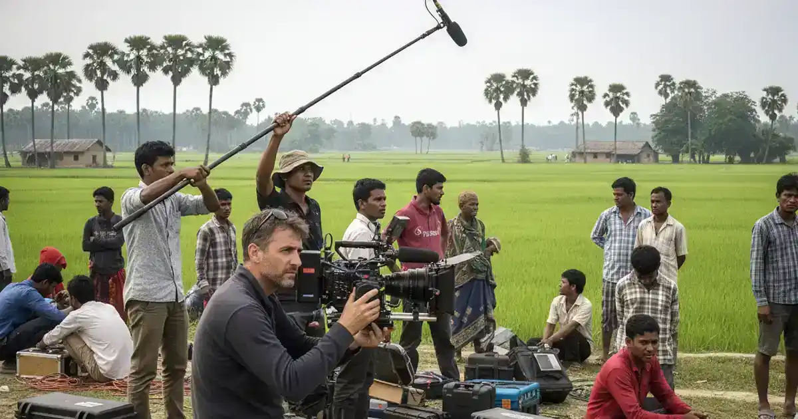

Fantastic team. They took ownership of the project. As a result, they gave very good creative inputs to improve the ad. They also tried hard to reduce the project cost... Read Ehtesham Ahmed's Full ReviewRead More
Video Production Support in Bangladesh: What International Crews Need to Know
Bangladesh is one of the most compelling countries in the world to film — and one of the most logistically complex. A country of 170 million people, extraordinary visual diversity and a production cost base far below Western markets, Bangladesh attracts documentary filmmakers, broadcast journalists, NGO communications teams and commercial production companies from across Europe, North America and beyond.
Most of them arrive underprepared for what actually running a production here requires.
This guide covers everything international crews need to understand about video production support in Bangladesh — from permits and visas to local crew, equipment rental, location access, seasonal planning and how to choose the right local production partner. Whether you are a solo documentary filmmaker or a ten-person broadcast team, the fundamentals are the same.

Why International Crews Need Local Production Support in Bangladesh
The assumption that a professional crew from the UK, USA or Europe can arrive in Bangladesh and operate independently is one of the most consistent and costly mistakes in international production. Bangladesh has a defined regulatory framework governing foreign filming, and that framework is not optional.
Beyond the regulations, there is the operational reality. Dhaka is the eighth most densely populated city in the world. Access to communities, institutions, government sites, hospitals, factories and sensitive areas is mediated through local relationships that take years to develop. A foreign crew that arrives without those relationships — and without someone who can communicate with authorities, community leaders and location gatekeepers in Bangla — will spend more time being refused access than filming.
Local production support is not a luxury for Bangladesh shoots. It is the infrastructure that makes the production possible.
Filming Permits in Bangladesh: What International Productions Need
Bangladesh requires foreign productions to obtain filming permissions before shooting begins. The permit landscape has multiple layers, and which layers apply depends on what you are filming and where.
- Ministry of Information clearance: The primary government approval required for most international productions. This covers the right to film commercially or journalistically in Bangladesh. The application process requires supporting documentation including the production company's credentials, the nature of the content and the intended broadcast or distribution channel. Processing takes 10 to 21 working days.
- District and local administration permits: Productions filming outside Dhaka — in Cox's Bazar, Sylhet, Chittagong or rural districts — typically require approval from district administration and, in some cases, the relevant upazila (sub-district) office. These are separate from the central ministry clearance.
- Site-specific permissions: Government buildings, hospitals, schools, ports, military establishments, industrial sites and religious institutions each have their own approval processes. Most require a specific application to the site authority well in advance.
- Restricted area clearances: Certain areas — including parts of Cox's Bazar adjacent to the Rohingya settlements (RRRC permit, 2 to 3 weeks), border zones and port areas — require additional clearances from relevant ministries or security agencies. These have longer processing timelines and should be initiated 6 to 8 weeks before the shoot.
- Police coordination: High-profile shoots, productions in politically sensitive areas and any filming in public spaces that may draw a crowd require advance liaison with local police. This is standard practice in Bangladesh and is managed through your local fixer.
The most important thing to understand about permits in Bangladesh is that processing time is rarely predictable. Applications that take two weeks under normal circumstances can take four when a government holiday, an election or a political development changes administrative priorities. Build permit lead time into your schedule — not as a footnote, but as a fixed constraint.
Media Visas and Journalist Credentials for Bangladesh
Foreign journalists and film crew members entering Bangladesh for professional filming purposes require a journalist visa or media visa — not a tourist visa. This is a critical distinction that catches international crews out repeatedly.
A journalist visa application requires:
- An official invitation letter from a registered Bangladesh organisation — typically your local production partner or fixer company
- Documentation from the commissioning broadcaster, production company or organisation confirming the nature of the production
- Passport copies and passport-size photographs of all crew members requiring accreditation
- Details of the production, intended locations and broadcast or distribution channel
Processing time varies by applicant nationality and the Bangladesh mission in your country. Allowing 2 to 4 weeks from invitation letter to visa grant is a reasonable planning assumption for most nationalities; some require longer.
Crew members who enter Bangladesh on tourist visas and then begin professional filming — particularly journalism or documentary content — are in violation of their visa conditions and face the risk of equipment confiscation and deportation. This is not a theoretical risk. It happens.
Your local production partner should handle the invitation letter process and guide your team through the application. See our dedicated Filming Permits and Media Visa Guidance in Bangladesh service.
Local Crew: What International Productions Can Source in Bangladesh
The quality of Bangladesh's local film production crew has improved significantly over the past decade. International productions no longer need to import full technical teams — skilled local professionals are available across all core production roles.
- Cinematographers and directors of photography — experienced local DPs comfortable with international brief standards, including documentary and cinema-style shooting
- Camera assistants and operators — trained in professional camera systems including Sony Venice, ARRI Alexa, RED and cinema-grade mirrorless setups
- Sound recordists and boom operators — field audio professionals with experience in interview, documentary and event production
- Gaffers and lighting technicians — available for productions requiring full lighting setups
- Production assistants — logistics-focused crew members who manage the day-to-day operational running of the shoot under the fixer or producer
- Translators and fixers — Bangla–English translators with production experience, essential for community filming, interviews and authority liaison
- Drivers and transport coordinators — knowledge of local routes, inter-city logistics and the specific access requirements of different filming locations
- Makeup, wardrobe and art department — available for commercial productions requiring on-screen styling
The most reliable way to secure experienced crew is through an established local production company with an existing roster of vetted professionals. Ad-hoc crew hired through online platforms or local contacts without verified production credits is one of the most common sources of quality problems on international shoots in Bangladesh.
Equipment: What to Bring and What to Rent in Bangladesh
Professional camera and production equipment is available for rental in Dhaka. International crews arriving with a full kit can reduce baggage, customs complexity and airline excess charges by renting locally — but availability must be confirmed in advance, not assumed.
- What is reliably available in Dhaka: Sony FX series, RED cinema cameras, DJI cinema drones, professional LED lighting systems, Sennheiser and Rode audio packages, standard grip and rigging equipment, gimbal stabilisers and basic monitor and playback setups.
- What to bring or pre-confirm: Specialist lenses, specific camera bodies not widely used in Bangladesh, large-format cinema packages, underwater or extreme environment housings, broadcast-specific monitoring setups. If your production depends on specific kit, confirm availability 4 to 6 weeks out.
- Outside Dhaka: Equipment rental is centred in the capital. Productions filming in Cox's Bazar, Sylhet, the Sundarbans or rural areas should factor in transporting rented equipment from Dhaka — either by vehicle or domestic flight for distant locations.
- Importing your own equipment: Professional equipment brought into Bangladesh by foreign crew must be declared at customs on arrival. A carnet or temporary import document simplifies the process significantly. Your local production partner should coordinate the paperwork before travel.
Key Film Locations in Bangladesh and Their Logistical Realities
Understanding what each location demands before you arrive saves days of avoidable delay once you are on the ground.
- Dhaka: High-density urban environments require careful permit coordination and realistic scheduling. Traffic is severe and unpredictable — a 5km transfer between locations can take 45 minutes or two hours depending on time of day. Old Dhaka (Sadarghat, Lalbagh, Hazaribagh) offers extraordinary visual content but demands significant preparation and community liaison before filming begins.
- Cox's Bazar: Bangladesh's most internationally recognised filming location. The beach, fishing communities and nearby Rohingya settlements each carry different access requirements. UNHCR, IOM and INGO coordination is required for access to Kutupalong and other settlements. Domestic flights from Dhaka are the most efficient travel option — road takes approximately 12 hours.
- The Sundarbans: Forest Department permits required in addition to standard filming clearance (4 to 6 weeks). All travel within the Sundarbans is by boat. Accommodation is available in Khulna or on government-run launches — there are no hotels inside the forest. Wildlife filming requires additional specialist coordination.
- Chittagong (Chattogram): The ship-breaking yards at Sitakunda are among the most visually dramatic industrial environments in the world — and among the most restricted. Access requires specific permission from yard owners and in some cases coordination with the Bangladesh Shipbreaking and Recycling Industries Association. The Hill Tracts to the east have their own permit requirements for foreign nationals (6 to 8 weeks).
- Sylhet and the northeast: Tea garden access is managed by individual estate owners — a production-by-production conversation rather than a government permit. The Ratargul swamp forest and haor wetland areas are visually exceptional but require boat-based logistics and local guide coordination.
- Rural Bangladesh: Community filming — in villages, health centres, schools and smallholder farms — requires community leader engagement well before the camera arrives. Turning up unannounced in rural communities is the fastest route to refusal. Your production partner should manage community liaison as a formal part of pre-production.
Production Planning Timeline for Bangladesh Shoots
The single most common cause of failed or delayed Bangladesh productions is insufficient lead time. Here is a realistic planning timeline for a standard international production:
- 8–12 weeks out: Engage your local production partner or fixer. Begin permit applications for restricted areas (Cox's Bazar refugee zones, Sundarbans, Chittagong Hill Tracts, port areas). Begin media visa invitation letter process for crew members.
- 6–8 weeks out: Submit Ministry of Information filming clearance application (10 to 21 working days processing). Confirm crew availability and equipment needs. Begin location scouting remotely with your local partner sending reference images and access assessments.
- 4–6 weeks out: Confirm all crew. Reserve equipment. Book accommodation and transport. Begin community liaison for village or sensitive location filming. Follow up on outstanding permit applications.
- 2–3 weeks out: Full production schedule confirmed. All permits in hand or final approval stages. Detailed logistics plan covering each shoot day — call times, locations, travel, meals, equipment transport and contingencies.
- 1 week out: Safety and security briefing for the full team. Finalise community access. Confirm emergency contacts. Equipment test and pre-production checks with local crew.
Productions that start this process four weeks out instead of eight routinely encounter exactly the problems they were trying to avoid — denied permits, unavailable crew, equipment shortfalls and community access refusals on shoot days.
Choosing the Right Production Support Partner in Bangladesh
Bangladesh has numerous individuals and companies offering fixer and production support services for international crews. The quality difference between them is significant and the consequences of choosing poorly are real — confiscated equipment, refused access, unusable footage and blown deadlines.
What to look for in a Bangladesh production support partner:
- A verifiable track record with international clients: Specific named productions, broadcasters or organisations they have supported — not vague claims. If a company cannot name productions they have worked on, ask why.
- Experience with your specific production type: Documentary support, broadcast news coordination, NGO communications production and commercial TVC work each require different skills and relationships. A fixer excellent at news work may have no experience with the community consent protocols that NGO work requires.
- Established permit and authority relationships: Permit processing in Bangladesh is relationship-dependent. A company that has processed permits for dozens of productions has relationships that genuinely accelerate the process. A new or informal operation does not.
- Transparent, itemised pricing: Production budgets are accountable documents. A production partner that cannot provide a clear, itemised breakdown of costs — separating fixer fees, crew day rates, equipment, permits, transport and accommodation — creates financial exposure for the production.
- English fluency at all levels of communication: Not just on the initial enquiry call, but throughout pre-production, on set and in post-shoot administration. Language breakdown mid-production is a specific and avoidable failure mode.
For international productions working in Bangladesh, Libanza Films provides the full spectrum of production support — from a dedicated film fixer through to complete local production management. See our Film Fixer in Bangladesh service →
Filming Seasons: When to Shoot in Bangladesh
Bangladesh has two distinct filming seasons and both are usable — they just demand different logistical approaches.
- October to March — the dry season: Lower humidity, cooler temperatures (15–28°C), clear skies and manageable road conditions. The best season for most exterior filming, rural travel and remote location work. Peak demand for local crew and equipment — confirm availability early.
- April to September — the monsoon season: Heavy rainfall, high humidity (32–38°C), dramatic skies and intensely green landscapes. Road conditions in rural areas deteriorate significantly — some char island and coastal locations become inaccessible. The flooding landscapes, storm light and rain-saturated environments are visually exceptional for documentary and climate content, but add two to three times the logistics complexity of dry season production.
Productions with scheduling flexibility should default to the October–February window for standard shoots. Productions specifically documenting flooding, climate displacement or monsoon-related subjects should plan for June–August — with robust contingency planning built into the schedule.
Frequently Asked Questions — Video Production Support in Bangladesh
International crews filming in Bangladesh typically need filming permits from the Ministry of Information (10 to 21 working days), media or journalist visas (2 to 4 weeks pre-clearance), local crew, equipment, transport, accommodation and on-ground coordination through a film fixer or local production partner. The complexity of each element depends on the locations, duration and subject matter of the production.
A minimum of 6 to 8 weeks is recommended for standard productions in Dhaka. Productions involving restricted areas, government sites, Cox's Bazar refugee settlements or remote locations should allow 10 to 12 weeks for permit processing. Media visa invitation letters typically take 2 to 4 weeks to arrange. Productions that start this process four weeks out instead of eight routinely encounter exactly the permit delays and crew availability problems that earlier engagement prevents.
Yes. Professional cinema cameras (Sony FX series, RED), LED lighting rigs, audio packages and grip gear are available for rental in Dhaka. Equipment availability should be confirmed in advance with a local production partner — at least 4 to 6 weeks out. Remote locations outside Dhaka typically require equipment to be transported from the capital, adding transit days to the production schedule.
Planning a Production in Bangladesh?
Libanza Films provides professional film fixer and production support services for international crews across Bangladesh — permits, visas, local crew, equipment, locations and full on-ground coordination. Tell us your production dates and requirements and we will respond with a detailed support plan and itemised cost estimate.

About the Author
Azizul Hoque Shiplu
Founder and Film Director of Libanza Films. Azizul has worked in commercial film production and advertising since 2007, beginning his career at Ogilvy and Mather and training at the Zahir Raihan Film Institute. He has personally managed full video production support packages for international crews from the USA, UK, Belgium, Romania, Malaysia, Ecuador, Singapore, UAE, France and India — covering permits, visas, crew, equipment, location access and logistics across Dhaka, Cox's Bazar, the Sundarbans, Chittagong, Sylhet and rural Bangladesh. Every planning timeline, crew description and location note in this guide reflects direct operational experience, not secondary research.
Related Reading
- Film Fixer in Bangladesh — Full National Coverage and Pricing
- Film Fixer in Dhaka — Permits, Old City Access and Broadcast News
- Film Fixer in Cox's Bazar — RRRC Permits, Coastal and Camp Productions
- Film Fixer in Sundarbans — Forest Permits, Boat Logistics and Wildlife
- Film Fixer in Chittagong — Ship-Breaking Yards and Hill Tracts Access
- Film Fixer in Sylhet — Tea Estates, Haor Wetlands and Swamp Forest
- Filming Permits and Media Visa Guidance in Bangladesh
- Filming Permits in Bangladesh Explained: Step-by-Step Guide for Foreign Crews
- How to Hire a Film Fixer in Bangladesh: What to Look For and What to Avoid
- How Much Does a Film Fixer Cost in Bangladesh? (2026 Guide)
- Filming Costs in Bangladesh: Budget Guide for International Productions (2026)
- Film Locations in Bangladesh: A Director's Guide for International Productions
- International Shoot in Bangladesh — 2026 Filming Guide
- Safety, Security and Risk Management for Filming in Bangladesh
- International Production Support in Bangladesh: What Foreign Production Companies Need to Know
Customer Reviews

Very dedicated team! Apprecite their enthusiasm, creativity and passion for their work... Read Md. Jamil Hossain Chowdhury Rahat's Full ReviewRead More

Libanza specializes in creating captivating films and advertisements with compelling narratives and stunning visuals... Read Riad Full ReviewRead More
Get in Touch
Our Clients
Diverse industries, trusted partnerships. From advertising agencies to corporate entities and non-profit organizations, our clients rely on us to bring their creative visions to life. With passion, expertise, and attention to detail, we deliver exceptional video production solutions that exceed expectations. Join our esteemed clientele and experience the power of captivating storytelling with Libanza Films.